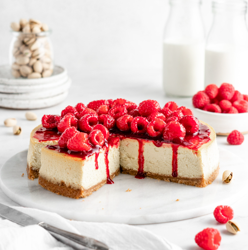

Vegan Raspberry Cheesecake

My boyfriend LOVES cheesecake!
So, I created this recipe as a healthier, vegan version of his favorite treat!
Ingredients
- 1 graham cracker crust (premade)
- 16 ozs of vegan cream cheese
- 1 1/2 cups of sugar
- 8 ozs of fresh raspberries
- vanilla extract
- agar agar powder
Steps: For the filling
- In a bowl combine the cream cheese, vanilla extract, and 1 cup of sugar
- Use a hand mixer and blend until the sugar is well incorporated
- Scoop all the cream cheese mix into the graham cracker crust
- Place this into the fridge to set
Steps: For the topping
- Add half the container of raspberries and 1/2 cup of sugar to a pot
- Heat this on medium/low heat and stir continuously
- Let simmer for about 5 minutes
- Let cool for 30 minutes
- Place sugared raspberries into a blender and blend until smooth
- Pass this through a sieve to get rid of the seeds
Steps: For assmembly
- Remove the cheesecake from the fridge
- Pour the raspberry mixture over the cheesecake
- Add fresh raspberries to the top in a pretty design (However you want!)
- Cut a slice and enjoy!